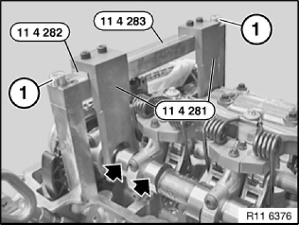
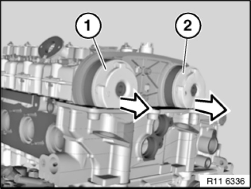
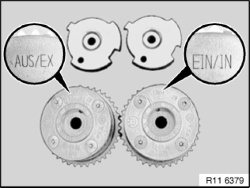
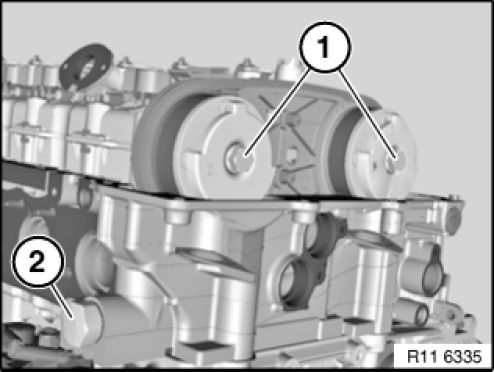
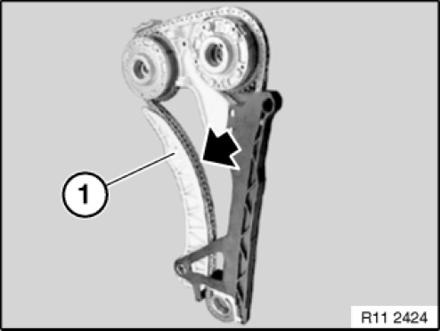
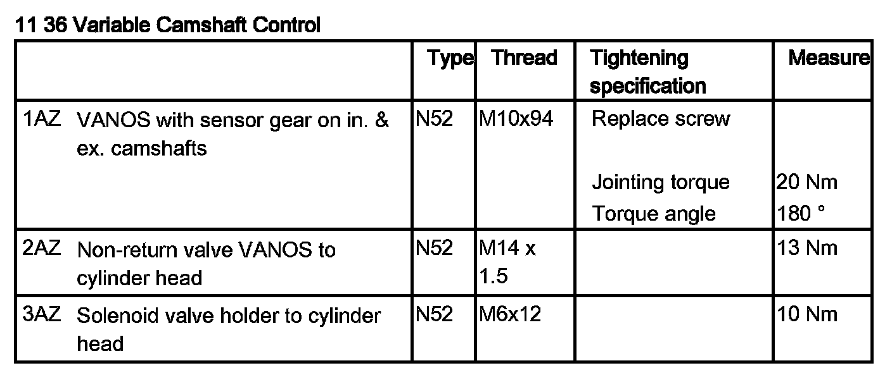
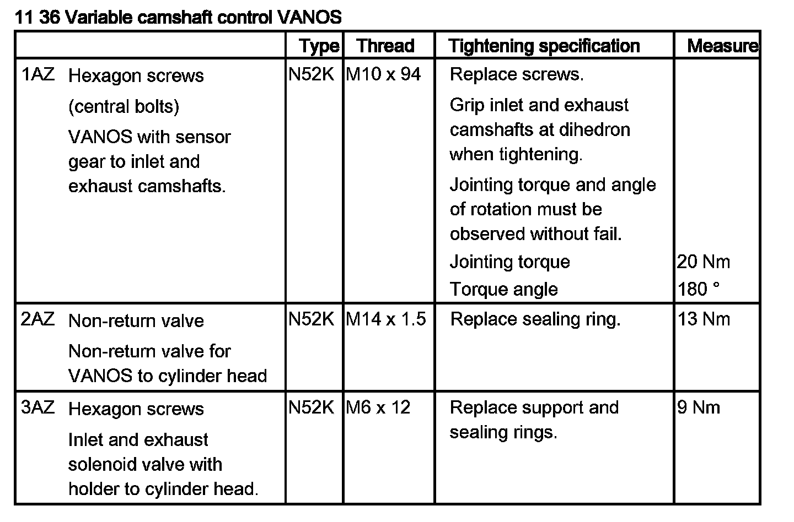
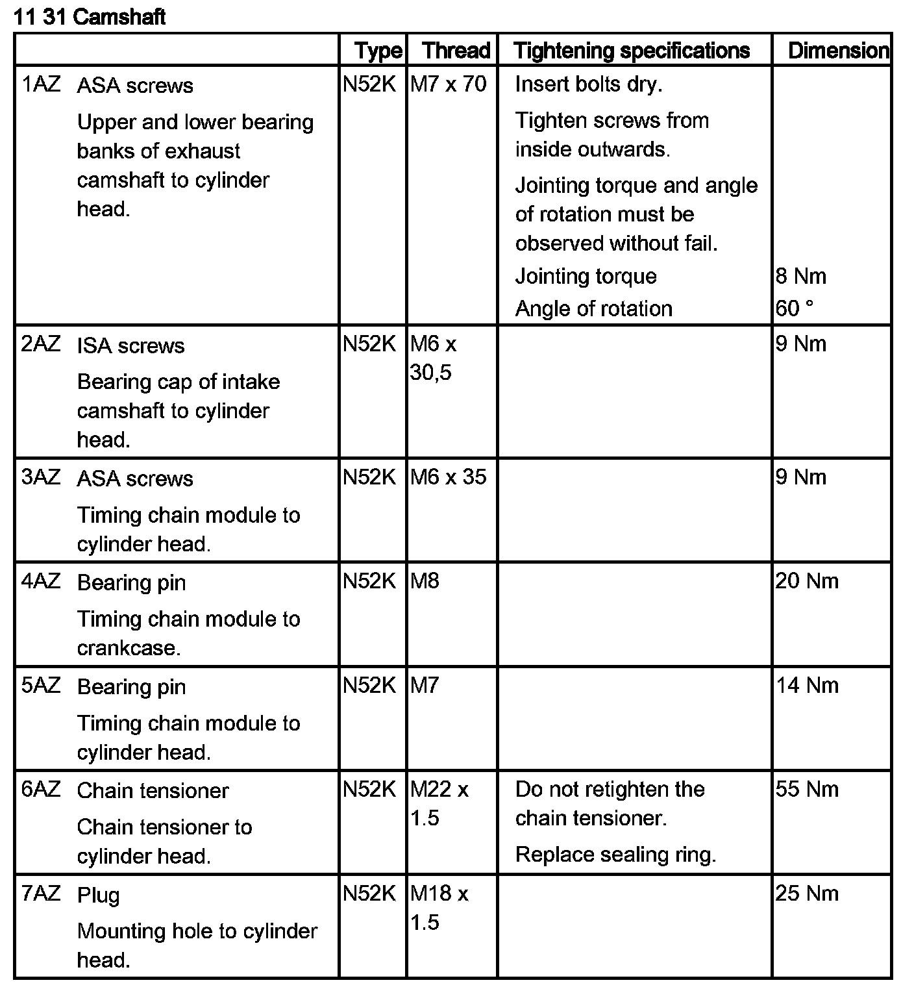
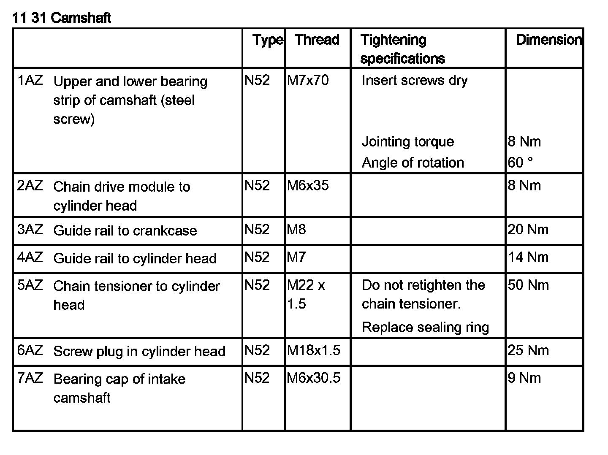

Removing and Installing/Replacing Inlet and Exhaust Adjustment Units
11 36 046 Removing and installing or replacing intake and exhaust camshaft adjusters (N52K)
Special tools required:

Necessary preliminary tasks:
- Remove cylinder head cover
- For E81, E82, E87, E88, E90, E91, E92, E93:
Remove cowl panel cover
- Check timing

IMPORTANT: Install special tool 11 4 280 to secure the central bolts on the intake and exhaust camshaft adjusters and camshafts.
Fit special tool 11 4 283 with screws (1).
Fit special tool 11 4 281 on special tool 11 4 283.
IMPORTANT: Fit special tool 11 4 282 underneath on side of intake camshaft.
Release chain tensioner (2).
Tightening torque 11 31 6AZ.
Release central bolts on intake and exhaust camshaft adjusters (1).
Tightening torque 11 36 1AZ.
Installation note:
Replace central bolts.
NOTE: Picture in CAD and does not show special tools.

Remove exhaust camshaft adjuster (1) from exhaust camshaft.
Remove intake adjuster (2) from intake camshaft.
Installation note:
To facilitate removal and installation of the intake and exhaust camshaft adjusters, turn the sensor gears at the opening downwards.

IMPORTANT:
Risk of mixing up the intake and exhaust camshaft adjusters.
Danger of engine damage.

Intake and exhaust camshaft adjusters are different.
VANOS is marked with EX for the exhaust camshaft.
VANOS is marked with IN for the intake camshaft.
Sensor gears can be fitted alternatively.

Position intake and exhaust camshaft adjusters on camshafts.
Installation position of intake and exhaust camshaft adjusters can be freely selected.
Insert central bolts (1).
Tightening torque 11 36 1AZ.
Installation note:
Replace central bolts.
IMPORTANT: Install special tool 11 4 280 to secure the central bolts on the intake and exhaust camshaft adjusters and camshafts.
NOTE: Picture in CAD and does not show special tools.

IMPORTANT: Incorrect assembly possible.
Press tensioning rail (1) by hand against guide rail and make sure timing chain is guided in tensioning rail (1).
NOTE: Schematic representation of removed timing chain module.
Adjust valve timing.
Fit chain tensioner.

Assemble engine.



